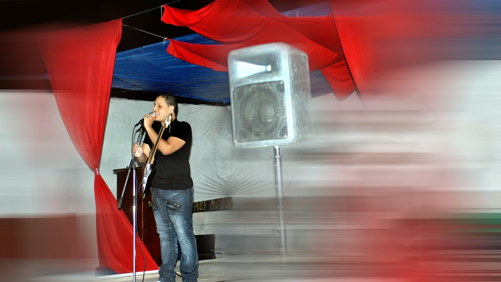

Hay historias que no comienzan con aplausos, sino con dudas. Esta es la historia de cómo descubrí mi vocación musical católica y el momento en que entendí que mi llamado era cantar para Dios. Mi testimonio de fe con música no comenzó con dones evidentes, sino con puertas cerradas y corazones abiertos.
Un rechazo temprano: “No tienes aptitudes musicales”
Mi primer encuentro con la música fue a los 8 años. Mis hermanas estudiaban en una escuela de baile que también ofrecía clases de música. Cada vez que las acompañaba, me fascinaba ver a los músicos tocar. Un día le pedí a mi madre que me inscribiera. Me hicieron un test de aptitudes musicales… y el resultado fue tajante: “No tienes las condiciones necesarias para ser músico.”
El despertar en la pastoral juvenil
Más adelante me integré a la pastoral juvenil. En cada misa, observaba con admiración a los jóvenes del coro: disciplinados, entregados, serenos. Me inspiraban. En un evento cultural intenté participar con un número musical que combinaba baile y canto, pero al no tener buena voz, terminé doblando la canción. La gente creyó que estaba cantando de verdad, pero algunos compañeros me hicieron saber que sabían que no era así. También familiares me aseguraban que el talento musical no corría por nuestras venas.
Mi entrada al coro: el timbre que no sabía que tenía
A pesar de todo, decidí intentarlo. Pedí entrar al coro. Me aceptaron, según dijeron, porque tenía “buen timbre de voz”. Yo ni siquiera sabía qué significaba eso. Pero ese simple comentario sembró una semilla que cambiaría mi vida.
La guitarra, mi gran aliada
Poco después, la directora del coro ofreció clases de guitarra. No lo pensé dos veces: compré una guitarra e inicié. Aprender a tocar me motivó a mejorar mi voz y me sumergió en el mundo musical, practicando con las canciones del coro. Con el tiempo, llegué a suplir al director cuando él no estaba.
Una misa inesperada y una confirmación divina
Un día invitaron al coro a cantar en otro lugar. El director y el guitarrista no pudieron asistir, y al final fui el único que se presentó. Canté toda la misa solo, con mi guitarra. Al final, el párroco me agradeció públicamente por el servicio, dijo que lo había hecho muy bien y pidió al pueblo que me diera un aplauso. Muchas personas se me acercaron con palabras de cariño y reconocimiento. Ese momento no infló mi ego… llenó mi alma de certeza.
Fue ahí donde confirmé que este no era un simple talento… era un verdadero llamado de Dios a cantar, un ministerio de música que apenas comenzaba.
Cuando Dios dice “Sí”, no importa cuántos digan “No”
Ese día entendí algo que no vino de los hombres, sino del cielo: Dios me quería cantando para Él. No porque fuera el mejor músico, sino porque estaba dispuesto. El camino apenas comenzaba.
Hoy comparto este testimonio de fe a través de la música como muestra de que cuando Dios llama, no importa si el mundo te descarta. Él capacita a quien se entrega con el corazón abierto. Si tú también sientes que Él te pide algo, no lo ignores. Tal vez, como yo, estás llamado a ser instrumento de Su gracia.
“Dios no llama a los capacitados, capacita a los que llama.”
Entrada #1 del blog